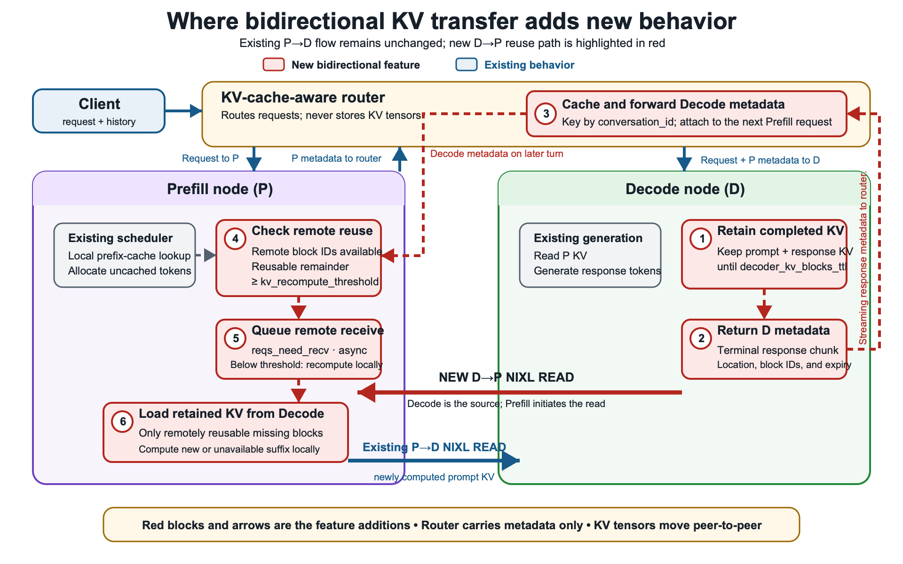
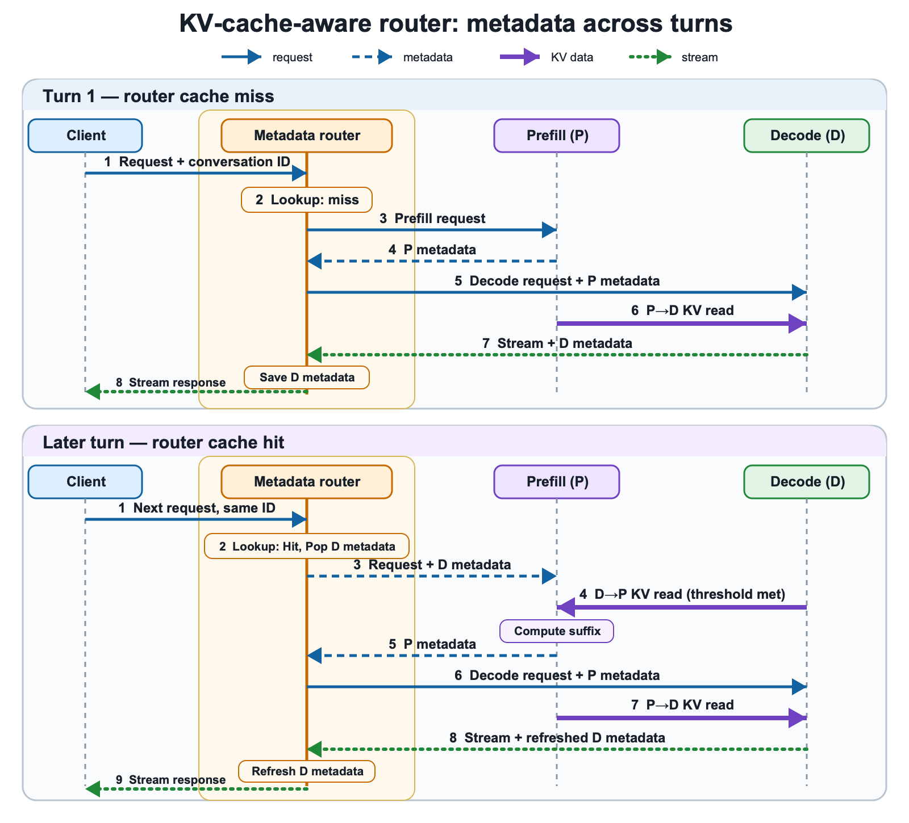
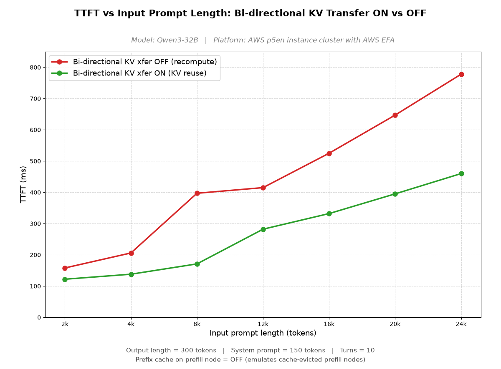
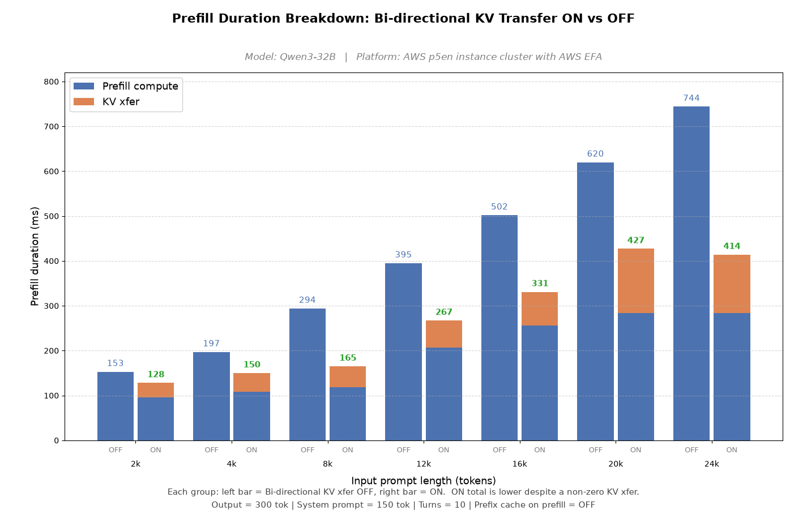
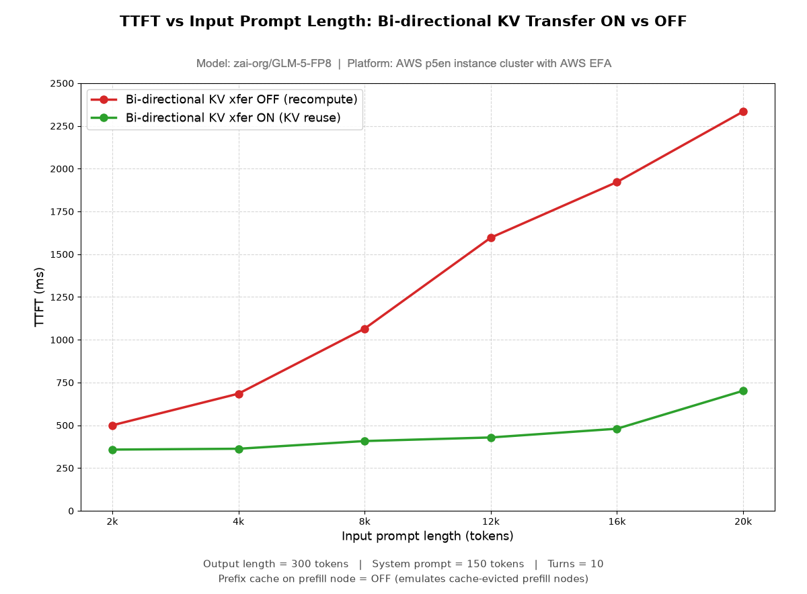
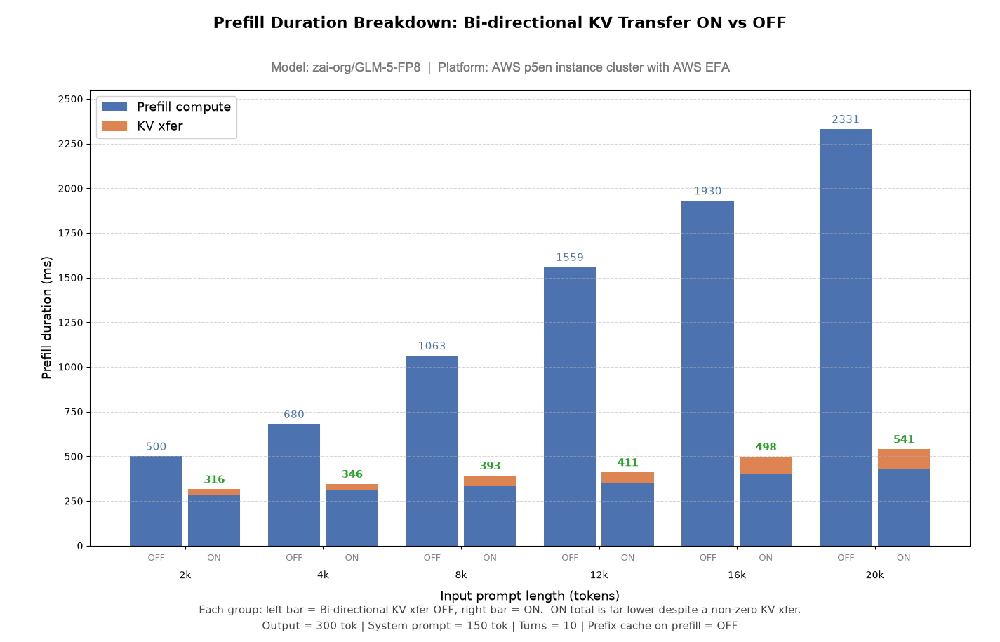

P-D分离服务里KV只从prefill单向流向decode，多轮对话每轮都要重算历史上下文。vLLM的双向KV传输让decode把算好的KV还给prefill：Qwen3-32B的TTFT最高降1.6倍，GLM-5-FP8最高降3.3倍。
多轮Agent负载靠累积上下文推进：Agent推理、调工具、吸收earlier结果，每一轮客户端都重发整个对话历史：系统指令、之前的prompt、工具结果、模型回复。在Prefill-Decode（P-D）分离部署里，prefill节点处理prompt建KV cache，decode节点拉走这些KV块再生成回复。
但传统分离服务只单向传KV：prefill到decode。这给多轮负载带来两个低效。第一，decode生成回复后，手里有prompt和新生成token的KV；下一轮prefill拿不到这些，只能把上一轮回复token的KV投影重算一遍。第二，decode维护会话状态而prefill不维护，活跃会话在prefill上的缓存更容易被驱逐；全miss时prefill要把整个对话历史（含系统指令、历史请求、工具结果、模型回复）的KV投影全重算。对话越长，重复工作越多，首token时间（TTFT）越高。
在AWS EC2 P5en实例加EFA的1P1D部署上，双向KV传输让Qwen3-32B的TTFT最高降1.6倍，zai-org/GLM-5-FP8最高降3.3倍。该功能最初在AWS Trainium集群上验证，已贡献给vLLM成为加速器无关能力。
双向KV传输让decode节点在对话的后续轮次把算好的KV还给prefill节点，prefill不再重算共享上下文，由kv_recompute_threshold控制。要实现它，KV得在产生它的那一轮之后活下来，还得能反向传输，由KV-cache-aware路由器协调。
图中蓝色是已有流程：router把请求发给prefill，prefill算好prompt KV返回块元数据，router转发给decode做标准的P→D NIXL READ。红色编号是新增：① decode生成后保留符合条件的KV块；② 在流式回复里返回元数据；③ router按conversation_id缓存元数据，挂到下一轮prefill请求上；④ prefill在本地缓存命中后检查远端可复用KV；⑤ 可复用token数达到阈值就排队异步接收；⑥ D→P NIXL READ拉回保留的KV，剩下后缀本地算。router只传元数据，KV张量点对点走。

vLLM扩展了NVIDIA Inference Xfer Library（NIXL）KV连接器，让prefill节点也能消费远端KV块：就像decode节点消费prefill提供的块一样。这不是平凡改动：两类节点架构不同，prefill给新prompt token算KV并能提供完整prompt KV块，decode只能serving缓存过的KV块。所以prefill和decode各自保留计算远端/本地KV块元数据的逻辑，实际传输机制（一次NIXL READ）在P→D和D→P两个方向是同一套。
连接器侧的支持有了，跨轮次协调KV复用还需要KV-cache-aware路由器。vLLM GitHub提供了示例proxy实现该流程，可按环境改写。
路由器是夹在客户端、prefill、decode之间的轻量有状态控制面：内存里维护conversation_id到decode的kv_transfer_params的映射，只存块位置元数据不存KV张量，元数据从响应流里拿而不是另查decode。
第一轮：缓存miss，走标准P→D流程；router从响应流里保存decode的元数据。后面的轮次：router用conversation_id取出元数据，prefill复用decode的KV，生成后再刷新元数据给下一轮。

默认decode生成一结束就释放请求的块。双向模式下保留一段可配置时间（decoder_kv_blocks_ttl，默认480秒），并公布位置和过期时间，prompt前缀和生成回复的KV都为下一轮留着。TTL到之前来的轮次复用，之后来的回落到普通prefill。TTL固定不续，按轮次间隔调，平衡复用率和显存占用。自然的下一步是给decode侧加心跳续租，对话一空闲就回收而不是等固定计时器。
复用不总是比本地重算快：可复用的前缀很短时，互联和协调开销可能超过重算这些token的时间。kv_recompute_threshold（默认64 token）管这个决策：要算的token数低于阈值就本地重算，达到阈值就从decode拉KV。各部署按模型算力、KV大小、互联性能调这个值。
评测用1P1D、P5en加EFA。为模拟prefill本地缓存被驱逐（或router选了没会话KV的prefill），prefill侧关了前缀缓存。
关掉双向传输，prefill每轮重算整个增长的上下文，TTFT随prompt长度陡升：Qwen3-32B从2k的158ms涨到24k的778ms。打开后复用decode保留的KV，TTFT平坦得多：同范围只从122ms涨到460ms，最长prompt降约1.6倍。

双向传输多了少量KV传输时间（Qwen3-32B约30到130ms），但它省掉的prefill计算远大于此。开传输的总prefill时长（128到414ms）远低于纯重算路径（153到744ms）。

GLM-5-FP8的差距比Qwen3-32B大得多：关传输时TTFT从2k的500ms涨到20k的2334ms；开传输后从358ms涨到702ms，长prompt下低约3.3倍。模型越大、单token重算越贵，KV复用随规模越划算。
传输时间约29到110ms；开传输的总prefill时长316到541ms，纯重算路径500到2331ms。


拓扑是两台p5en（prefill :8100，decode :8200）加EFA，第三台小节点跑proxy和benchmark（:8000）。A/B两轮唯一变量是BIDIR，两台节点必须一致。
prefill侧启动命令（decode侧把kv_role换成kv_consumer等对应值），注意 --no-enable-prefix-caching只在prefill侧开：这正是要模拟的缓存驱逐场景：
export FI_PROVIDER=efa
export VLLM_NIXL_SIDE_CHANNEL_HOST=<P_IP>
export VLLM_NIXL_SIDE_CHANNEL_PORT=5600
vllm serve Qwen/Qwen3-32B --served-model-name Qwen --dtype bfloat16 \
--tensor-parallel-size 8 --max-model-len 32768 --max-num-seqs 8 \
--no-enable-prefix-caching --port 8100 \
--kv-transfer-config '{"kv_connector":"NixlConnector",
"kv_buffer_device":"cuda","kv_role":"kv_producer",
"engine_id":"prefill-engine-001","kv_rank":0,"kv_parallel_size":2,
"kv_connector_extra_config":{"backends":["LIBFABRIC"],
"kv_recompute_threshold":64,"decoder_kv_blocks_ttl":480,
"bidirectional_kv_xfer":false}}'跑OFF轮再跑ON轮（ON轮先停掉两台server和proxy，BIDIR=true重启）：
VLLM_SRC=~/vllm_src LEG=off ./run_multiturn_sweep.sh
# ON 轮：两台 server 与 proxy 都停掉，BIDIR=true 重启后再跑
VLLM_SRC=~/vllm_src LEG=on ./run_multiturn_sweep.sh
# GLM-5-FP8：MODEL=zai-org/GLM-5-FP8 SERVED_NAME=GLM 重复两轮| 项目 | 配置 |
|---|---|
| 实例 | p5en.48xlarge（8×NVIDIA H200），prefill与decode各一台 |
| 区域 | ap-south-1（孟买），同AZ |
| 操作系统 | Ubuntu 24.04.4 LTS，内核6.14.0-1018-aws |
| 驱动/CUDA | 驱动580.126.16，CUDA toolkit 13.0 |
| EFA网卡 | 每实例16张，每张200Gb/s，共3.2Tb/s |
| EFA软件 | installer 1.50.0，内核模块3.3.0g，libfabric 2.6.0 |
| vLLM/NIXL | vllm 0.29.0，nixl 1.4.1 |
EFA device selection by NIXL：LIBFABRIC后端把16张EFA网卡都当rail打开，每块GPU的KV cache只注册在与该GPU同PCIe交换机的2条rail上，传输全程PCIe本地；这是默认行为，无需覆盖。
参考：https://vllm.ai/blog/2026-10-12-bidirectional-kvxfer-multiturn-agentic-workload